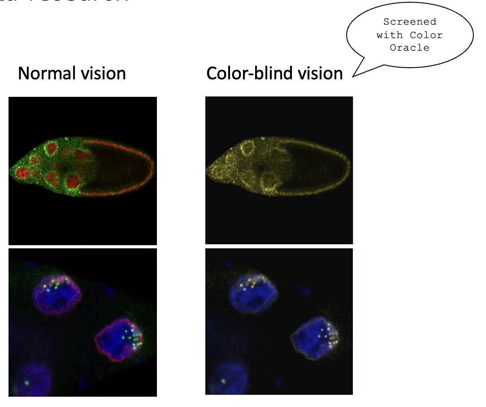
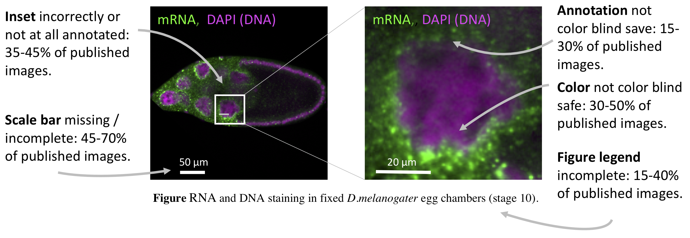
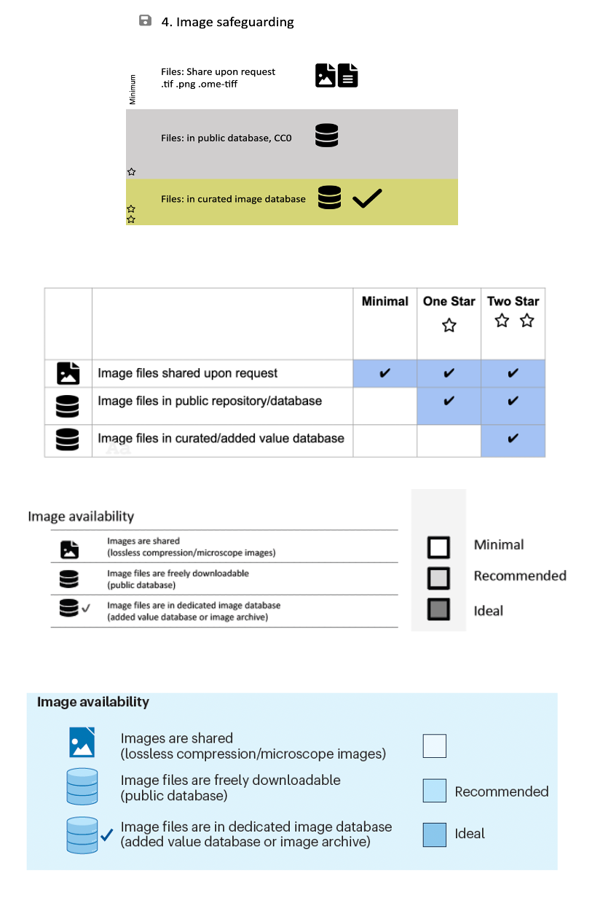
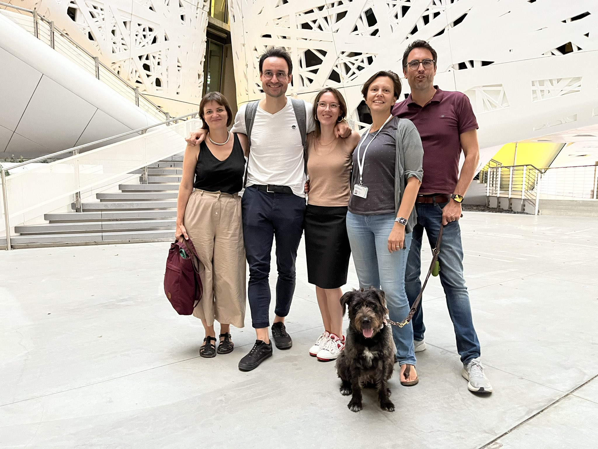
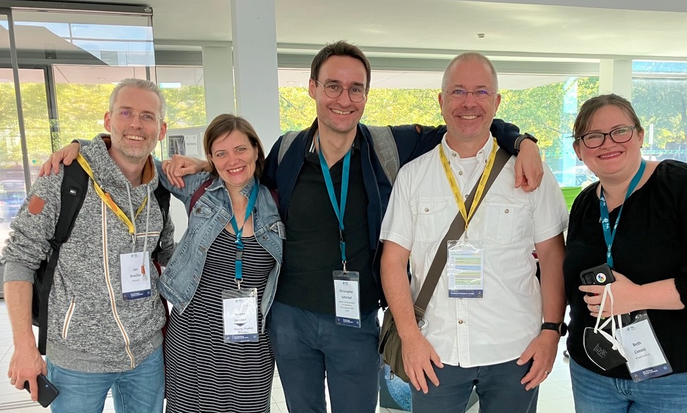

Our guidelines for image and image analyses publishing just got published for you all in Nature Methods. This was a long journey, here is how it came about:
Some images, oh my!
In 2017 I was prepping one of my data vis courses, which also touches on image figures. While searching for teaching examples in publications, I realised that many, many authors were still happily using red/green color combinations in both charts and also in microscopy images, thus making their science visually inaccessible to colour-blind readers (see my post at TheNode).

We collected numbers, OH DEAR!
At the 2018 Light Sheet conference microscopy fans gathered to discuss awesome images. Except me, I was still stunned by the subpar images I had seen in papers. I ended up chatting with Rita Strack, editor at Nature Methods about journal strategies to ensure image figures are legible (none back then!) and my idea for a survey. The idea evolved into a project when I teamed up with Tracey Weissgerber in the eLIFE ambassador programme. Tracey had experience with meta-research (i.e. screening literature) and with out group we analyzed published images with a standardized protocol. Now we had numbers for what previously was just an impression: lots of pictures didn’t have sizes marks, giving readers a little guessing game time. The colors? Turns out, many were like secret codes that only the authors could understand. Plus, the explanations often barely enlightened - check ourpaper in PLOS BIO

Zoom, Zoom, Zoom: science in a global network
Our PLOS BIO paper got me onto the (virtual, remember COVID!) stage of the 2020 meeting of the German Bioimaging society. The Q&A was a lively discussion of many impossible ways to improve image communication and one clear idea: let’s form a QUAREP working group for this! Starting with just four members, we hashed, clashed, and conjured what eventually became the checklists for image publishing. Quickly our Working Group 12 grew and became very interdisciplinary: we have members from research institutes, medical clinics, and even NASA; from all continents and time-zones; from applied research, companies and theory. Safe to say, we also at times failed to find a consensus and tip toed around some topics until we dropped them. Our opinions also differed on how strict we wanted to be with guidelines but also there found a workable compromise between our ideals and reality. In the end, all scientists globally, also those with little access to advanced microscopy facilities, should be empowered to reach the minimal goals, while at the same time we also wanted to push some higher image and image analysis standards. This lead to the the three levels, mandatory, recommended and ideal.

A paper emerges
Fuelled by caffeine and italian carbs at the Human Technopole in Milan, a writing-weekend produced the first draft that was improved in feedback rounds with many of our QUAREP-LiMi friends and colleages. The extended vetting was helpful, with just one round of small revisions our manuscript was accepted by our first choice journal, Nature Methods. Coincidentally, it was handled by Rita Strack, who I believe does not even remember our brief coffee line conversation about this project many years agon! And now we give the checklists to all of you scientists – These are not lists, but the audacious result of chasing pixel perfection in scientific zoom calls. For me personally it was a rewarding experience to collaborate with so many people, and from now I will keep meeting co-authors at many meetings to come!
 